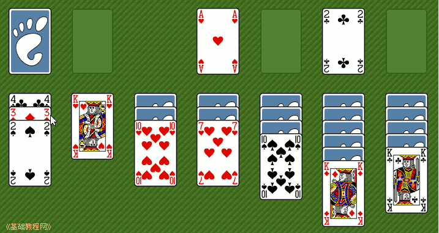

电脑操作基础
作者：TeliuTe 来源：基础教程网
七、纸牌游戏 返回目录 下一课纸牌也可以帮助我们练习鼠标的操作，可以练习鼠标的双击和拖动操作，下面我们来看一个练习；
1、启动纸牌
1）点击菜单“应用程序－游戏－Agnes纸牌”，程序启动后，出来一个绿色窗口；
2）左上角有一沓牌没翻开，下边有7列，每列的最下边一张是翻开的，在右上角还有有四个空牌；
2、游戏操作
1）如果翻出来的牌有 A ，就可以把它拖到右上角去，或者双击一下也可以自动上去，
2）把 A 移上去以后，下面的牌就自动翻开，然后再找到相同花色的2、3...都拖上去，全部摆好就成功了；
3）牌的摆放顺序是一个压一个，按从小到大顺序，并且是颜色错开，像上面的黑 2 可以压到方片 3上，
方片 3 可以压在梅花 4 上，可以一次移动整个一摞牌，移走一个后，下面的牌就自动翻开；

4）当下边的牌走不动的时候，可以点一下左上角的那一沓牌，出来的牌可以排列到中间来；
5）如果中间有空档，可以把 K 摆在到空档里头；
6）这样不断地移动、翻牌、排列，把牌慢慢收到右上角去，最后就成功了；
7）点菜单“游戏－选择游戏”，还可以试试其他的纸牌游戏；
3、练习
1）成功翻一盘纸牌；
本节学习了纸牌游戏的基本操作，如果你成功地完成了练习，请继续学习下一课内容；本教程由86团学校TeliuTe制作|著作权所有，商业用途请与作者联系
基础教程网：http://www.laxjyj.com/teliute/
美丽的校园……
转载和引用本站内容，请保留版权信息和本站链接。